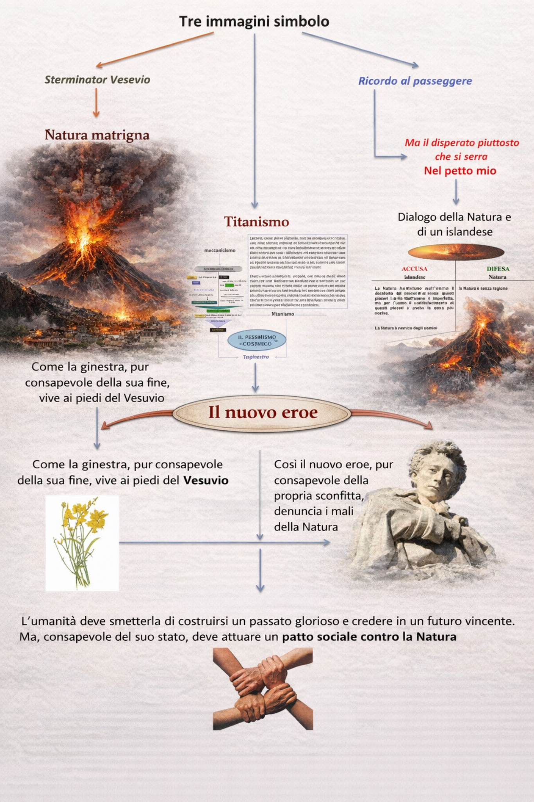
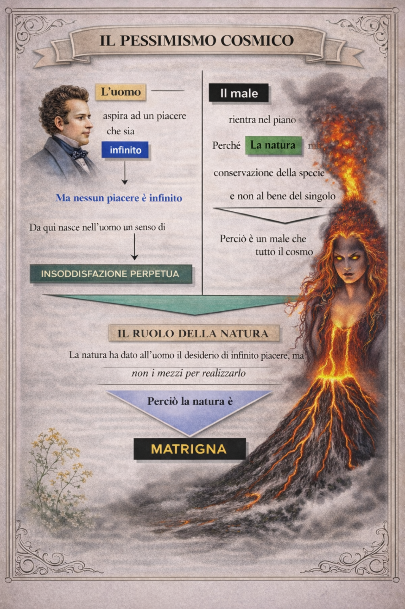

Conclusione
1. Un percorso che parte dai sensi e arriva alla solidarietà

Il viaggio dentro il pensiero di Leopardi parte da una base filosofica precisa: l’uomo conosce attraverso i sensi e vive in un universo materiale, regolato da leggi che non hanno alcun fine morale. Da qui nasce la tensione che attraversa tutta la sua opera: il desiderio umano tende all’infinito, ma la realtà offre solo esperienze limitate, fragili, finite.
2. Dalla poesia dell’illusione alla verità della disillusione
Nella prima fase Leopardi riconosce ancora un valore positivo all’immaginazione. Il vago, l’indefinito, la rimembranza e gli idilli permettono all’uomo di sfiorare una felicità possibile, anche se provvisoria. In seguito, però, questa apertura si restringe: la storia distrugge le illusioni, e poi la Natura stessa rivela il suo volto indifferente.
3. Il doppio volto del pessimismo
Il pessimismo storico mostra che la civiltà ha reso l’uomo più consapevole ma anche più infelice, perché lo ha allontanato dalle illusioni naturali. Il pessimismo cosmico va oltre: il dolore non dipende solo dalla storia, ma dalla struttura stessa dell’universo. La Natura non protegge il singolo, non garantisce giustizia, non promette felicità.
4. La grandezza di Leopardi
La forza di Leopardi non sta nel consolare. Sta nel guardare il vero senza mentire. Anche quando descrive lo sconforto, Saffo, Bruto o la Ginestra, non cede mai alla falsità delle illusioni facili. Questo rende il suo pensiero ancora attuale: Leopardi ci obbliga a chiederci che cosa resta all’uomo quando cadono le giustificazioni, i miti del progresso e le promesse di felicità automatica.

5. L’ultima risposta: dignità e social catena
L’approdo finale non è la disperazione muta. È una forma nuova di grandezza. Se la Natura è indifferente, gli uomini non devono combattersi tra loro: devono riconoscersi compagni nella stessa condizione. Nella Ginestra questa idea diventa etica civile: la vera nobiltà consiste nel vedere il vero, non illudersi, e costruire una solidarietà lucida tra esseri fragili.
6. Perché studiare Leopardi oggi
Studiare Leopardi significa imparare che la letteratura non serve solo a decorare il mondo. Serve a comprenderlo. Nei suoi testi troviamo una riflessione radicale sul desiderio, sul dolore, sulla natura, sulla storia, sul limite e sulla dignità umana. Per questo Leopardi non è soltanto un poeta da ricordare: è una mente con cui continuare a dialogare.